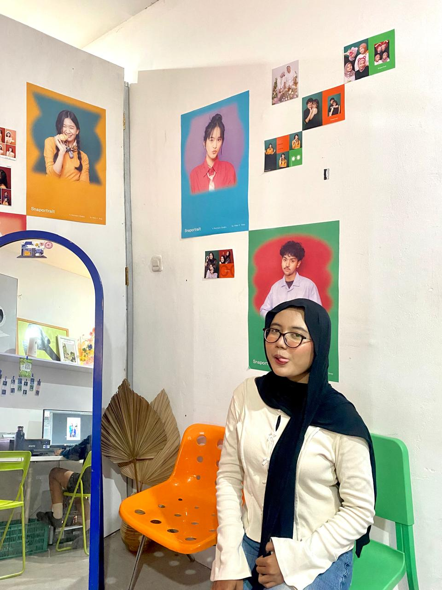
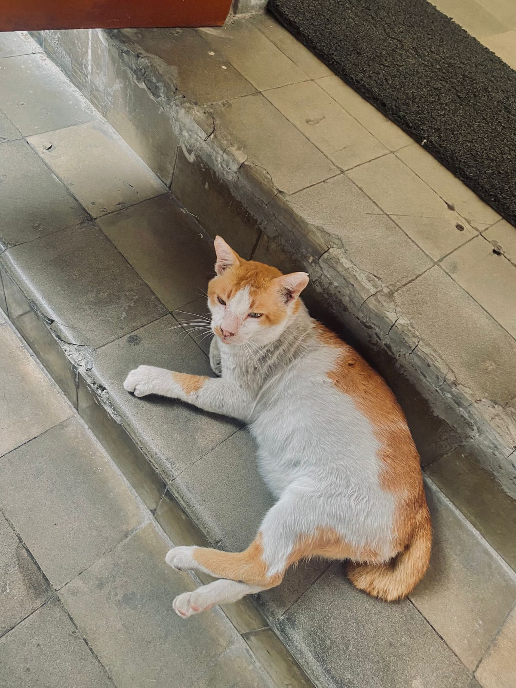

WEBGIS Wisata & Kuliner Yogyakarta
Data
Maps
Home
Profileku
Salam kenal! Yuk tahu tentang aku!!.


Previous
Next
Nama
Jenni Putri Ardani
NIM
23/515612/SV/22586
Prodi
Sistem Informasi Geografis
Asal Usul
Sanden Pride!!
Hobi
Mengerjakan Responsi PGWEB